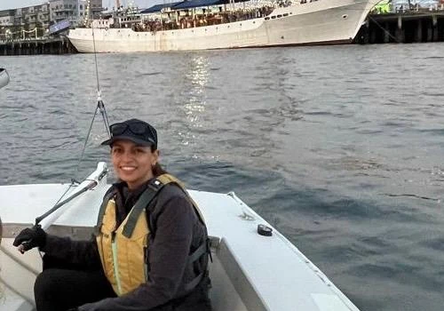
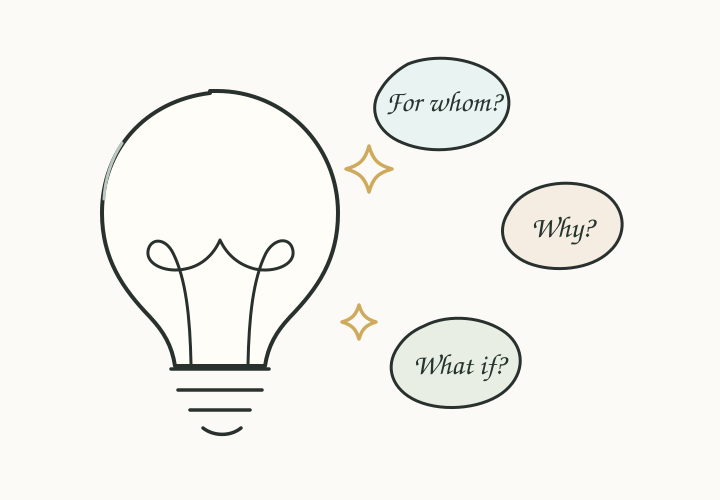
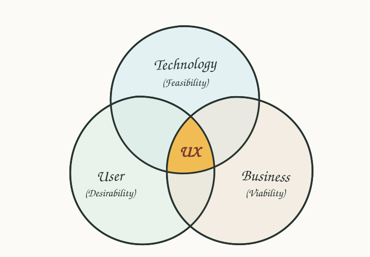
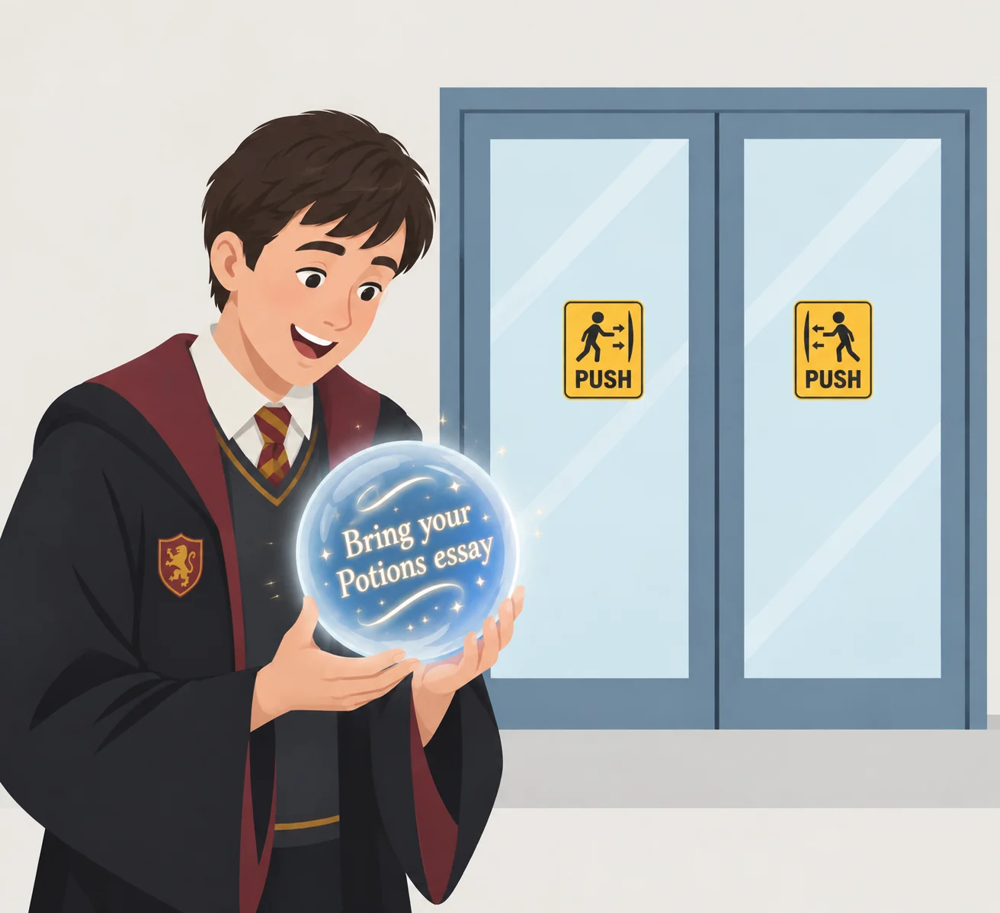

A little about me
I’m Simran (pronounced Sim-run), but most people call me Sim.
I’ve always been curious about how people interact with technology, how things work, and why some experiences just make sense while others don’t. That curiosity is what first pulled me toward Human-Computer Interaction. While doing my master’s in Computer Science, I chose to specialize in HCI because I was fascinated by the space where people and technology meet.

Early in my career, I also spent some time in software engineering. That experience gave me a useful understanding of how products are built and helped me appreciate the technical side of the work. But I soon realized that I was especially drawn to the questions around the technology: What are people trying to do? What actually matters to them? How should the experience work? How can we find creative ways through constraints? What possibilities are we not considering? How do we balance a good idea with business and technical realities?
UX felt like the place where those interests came together.

What I love about design is that there’s rarely just one way to solve a problem. You get to investigate, make sense of messy information, think strategically, explore possibilities, and turn all of that into something people can understand and use.
Today, I enjoy being somewhere in that intersection of people, technology, business, and design. I ask questions, make sense of complexity, and help turn ideas into something people can actually use.

“Usability is about people and how they understand and use things, not about technology.”
Steve Krug
How I lead
I’ve had opportunities to lead in different ways throughout my career. I’ve led UX across subsets of product teams, coordinated design work for different features within a product, and served as a subject matter expert for key areas. I’ve also helped shape consistency across larger product areas through design patterns, supported designers and developers through workshops and reviews, and mentored earlier-career designers.
For me, leadership isn’t just about directing the work. It’s about creating clarity, sharing context, helping people make good decisions, and making the people around me better.
How I work
I like to understand the problem before becoming attached to a solution. I ask questions, learn from users and stakeholders, understand the business goals and technical constraints, and work closely with product and engineering to build a shared understanding of the problem.
I also try to look beyond the immediate interaction: how a solution fits into the larger system, how it affects the people around it, and what happens when it scales.
I adapt the design artifact to the question I’m trying to answer and the kind of input I need from the team, whether that’s a sketch to explore an idea, a user flow to align on structure, a Figma prototype to examine an interaction, or an interactive build to explore behavior more deeply. I’m also comfortable using AI-assisted coding when a working prototype can help make an idea more tangible.
I don’t expect the first idea to be the right one. I’m comfortable iterating, changing direction, and balancing user needs, business goals, technical realities, and the details that make an experience feel considered.
Outside of work
I’m naturally curious about how people interact with the world around them, so I sometimes find myself wondering, “How would I design this?” It happens with everyday things, apps, signs, and, occasionally, movies.
Take Neville’s Remembrall in Harry Potter. It tells him he’s forgotten something, but not what he forgot. I’ve always thought there had to be a better solution: magical text that only Neville could read, revealing exactly what he forgot. Privacy and useful information, all in one.

And it’s not just fictional worlds. I catch myself doing the same thing in everyday life. I’ve seen people, and done it myself, pause for a second or two at a door, wondering which way it opens: push or pull? Maybe you’re tired, distracted, carrying something, or unfamiliar with the language. Whatever the reason, a simple directional icon can sometimes make the interaction instantly clear. It makes me wonder: why don’t more doors with Push and Pull labels come with a clear visual cue too?
If you’ve ever had a similar “wait, how would I design this?” moment, I’d love to hear about it.
When I’m not working on product problems, I’m usually painting, sketching, tending to my potted plants, thinking about how we can make technology more sustainable and nature-friendly, or sometimes traveling.